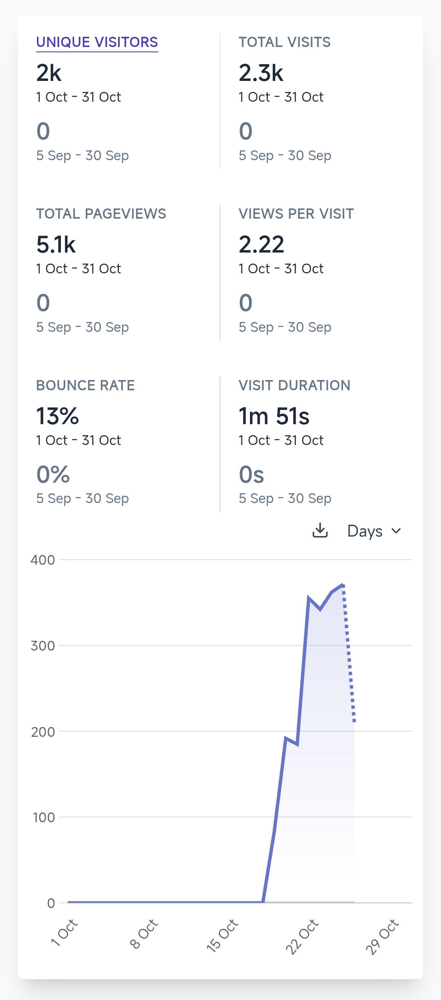
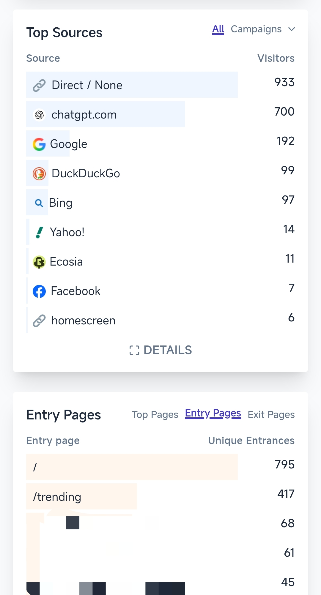

2026 年 10 月 26 日，哥飞在群里复盘了一个刚上线一周的新产品：2K UV、5.1K 页面浏览，其中 700 位访客来自 ChatGPT，但一单没出。他把原因归结为产品形态——做成资讯为主、生成器为辅，接住的是来查信息的人，而不是有生成需求的人。Alex 补了一句：ChatGPT 带来的流量，往往带着检索答案的意图，而不是付费意愿。
一周的数字
| 指标 | 截图数值 | 说明 |
|---|---|---|
| 独立访客（Unique Visitors） | 2k | 统计区间 10 月 1 日–31 日；9 月 5 日–30 日为 0 |
| 总访问（Total Visits） | 2.3k | 每次访问平均浏览 2.22 个页面 |
| 页面浏览（Pageviews） | 5.1k | 跳出率 13%，平均访问时长 1 分 51 秒 |
| chatgpt.com 来源 | 700 位访客 | 约占独立访客的三分之一 |
| Google / DuckDuckGo / Bing | 192 / 99 / 97 | 搜索引擎合计约 388 位 |
| Direct / None | 933 | 来源未标记，占比最高 |
截图统计区间是 10 月 1 日至 10 月 31 日，但 9 月 5 日至 9 月 30 日为 0，曲线从 10 月中旬才开始抬升，所以这些数字基本就是上线后一周的成绩。这与聊天里说的「上周一凌晨一点上线」吻合，对应 10 月 19 日。

这组数字里最容易被误读的是「跳出率 13%」。低跳出、近两分钟停留，通常说明内容被认真看了；它并不说明这些访问带着生成需求。流量质量不是用停留时长衡量的，是用意图匹配衡量的。
流量从哪来

Top Sources 里 Direct / None 以 933 居首，chatgpt.com 700 次之，Google 192、DuckDuckGo 99、Bing 97。Direct / None 是不带来源标记的访问，可能混着未打标的分享链接，所以不能把 2K UV 全部记到某一个渠道头上。同一张截图的入口页分布里，首页 / 承接 795 个独立入口，/trending 承接 417 个——近五分之一的访客第一眼落在趋势列表上，这与「以内容资讯为主」的自我判断互相印证。
零付费的归因：形态与意图错配
我现在总结下来，没有付费的最可能原因，跟产品形态有关。我没有做成生成器形态，而是做成了以内容资讯为主，附带生成器。这样不管是 GPT 的理解，还是用户的需求，都是另一种类型的流量，是来获取信息的，他们本身没有生成需求。
这个判断值得拆开看。对 ChatGPT 和搜索引擎来说，一个以资讯为主的页面就是一个可以回答「最近有什么」的来源；对被吸引来的用户来说，他的任务是获取信息，不是完成一次生成。生成器即使存在，也只是页面上的一块附属功能，不构成访问理由。
于是出现一个看起来矛盾、其实自洽的结果：内容被看了，停留时长不错，但没有付费——因为看内容的人本来就没有生成需求。Alex 的补充把这一点说透了。
ChatGPT 带来的流量往往带着检索信息 寻找答案的意图，而并非购买意愿或者付费的需求可能。
彪哥的判断：不要做 Agent，要做表单
不要做 Agent，要做表单。因为表单最直观，最容易理解，用户很明确自己要的是什么，一看表单就知道要怎么操作。
哥飞是在复盘中想起这句话的。表单和资讯站的区别不在功能多少，而在页面对用户发出的第一个信号：表单说「把你想要的填进来」，资讯站说「看看这些内容」。前者筛选出有生成需求的人，后者聚集来看信息的人；同一个生成能力，放在两种外壳里，接到的是两类流量。
判断顺序：先问这波流量来做什么
- 先看流量意图：这批人是来找答案，还是来完成一个任务？
- 再看产品形态：资讯页承接检索，表单承接生成；混在一起时，用户只会按更显眼的那一面来理解网站。
- 最后看变现方式：要收钱就得聚拢有明确生成需求的人；要靠广告才需要大流量，而且量要足够大。
整个互联网，流量是有很多的，我们需要搞清楚，我们要的是什么样的流量，我们的目的是变现，那就要用户有明确生成需求到流量，这样才可能会有人付费。其他的流量，除非量特别大，可以靠广告变现，不然其实没必要去搞。
这段话把取舍讲明白了：不是所有流量都值得要。付费产品需要的是有明确生成需求的人；泛资讯流量只有在量足够大、能靠广告变现时才成立。有量但不够大、有意向但不指向生成的中间地带，最容易白忙。
需要保留的边界
- 这是单个产品、一周、2K UV 的观察。0 付费也可能与定价、付费墙位置、生成器入口曝光有关，聊天没有披露这些细节。
- Direct / None 占 933，来源未标记，不能据此判断某个渠道的转化能力。
- 「ChatGPT 流量只检索、不付费」是这一次的观察，不是平台层面的规律；同样的入口接到表单型产品，意图可能不同。
- 「不要做 Agent，要做表单」是彪哥针对普通用户产品的经验判断，聊天没有给出数据或对照实验。
- 截图数字来自产品后台的流量统计，去重口径与统计区间以截图为准，未提供原始报表。
附录：原始对话
本次对话共 8 条消息（含 2 张图片），时间跨度 2026 年 10 月 26 日 08:52–09:24。
第一条消息：哥飞-2026年10月26日 08:52：上周一凌晨一点上线到新产品到今天总共2K 的 UV，其中 ChatGPT 来了700个。但现在看来，是个失败的产品，因为一单没出。
最后一条消息：Alex-2026年10月26日 09:24：而并非购买意愿或者付费的需求可能~